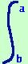
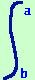
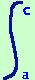
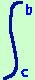

Proprieta' degli integrali definiti
Vediamo ora le proprieta' tipiche degli integrali definiti
- Cambiare di verso l'intervallo equivale a cambiare di segno l'integrale
 f(x) dx = -  f(x) dx f(x) dx = -  f(x) dx
- Se C e'un punto interno dell'intervallo AB allora avro'
f(x) dx =  f(x) dx +  f(x) dx
essendo a,b e c le ascisse dei punti A,B e C
Naturalmente, oltre queste, valgono tutte le proprieta' degli integrali indefiniti
|